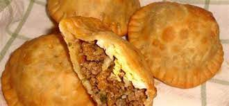

PASTELITO

Pastelito descripcion super acertada de esta comida con receta
- 1 Kg de harina de trigo sin leudante.
- 1/2 Taza de aceite vegetal.
- 1/2 Taza de azúcar.
- 1 Cucharada de sal.
- 1 Cucharadita de esencia de mantequilla.
- 2 Tazas de agua fría.
- 2 Tazas de agua fría.
- 1/2 Kg de queso blanco rallado
Masa
- Colocar en un bol 900 gramos de la harina, reservar 100 gramos.
- Agregar el aceite, el azúcar, la sal y la esencia de mantequilla y mezclar con las manos
- Añadir el agua en 3 partes y amasar hasta que la masa esté homogénea, suave y compacta. Reservar
Relleno y montaje
- Colocar 2 papas con su concha a hervir hasta que ablanden, pelar y hacer un puré.
- Agregar el queso rallado al puré. Dependiendo de la cantidad de sal en el queso, rectificar la sal y agregar un toque de mantequilla.
- Estirar la masa de harina de trigo en la mesada de manera rectangular, tratando de darle la mayor uniformidad posible,
- Marcar ligeramente con un cortador de galletas circular, la mitad de la masa varias veces de forma ordenada y secuencial.
- Poner pequeñas cucharaditas del relleno de puré en el centro de los círculos marcados.
- Colocar con mucho cuidado la mitad de la masa libre sobre la que tiene el relleno.
- Cortar con el cortador de galletas, los pastelitos de manera individual e ir poniéndolos sobre la mesada previamente enharinada.
- Apretar los bordes del pastelito con un tenedor y dejamos reposar tapados con un paño limpio y seco durante 10 minutos antes de freír.
- Freírlos en abundante aceite caliente hasta que estén dorados. Sacra del aceite y escurrir en una bandeja.
Home